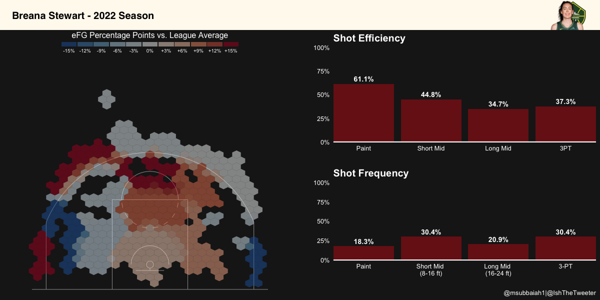
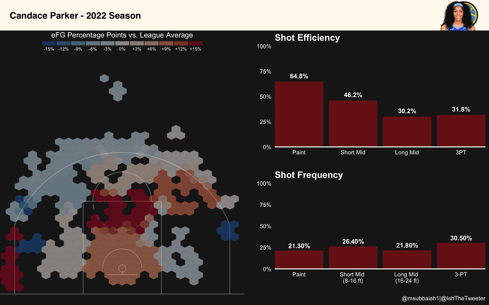
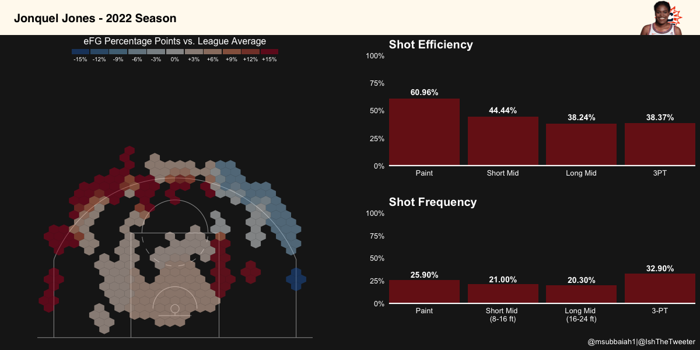
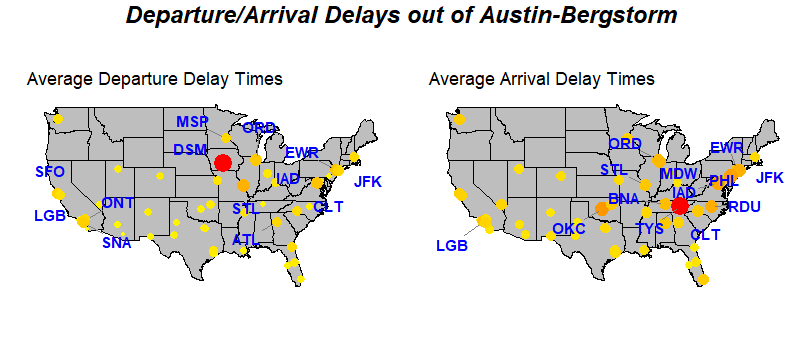
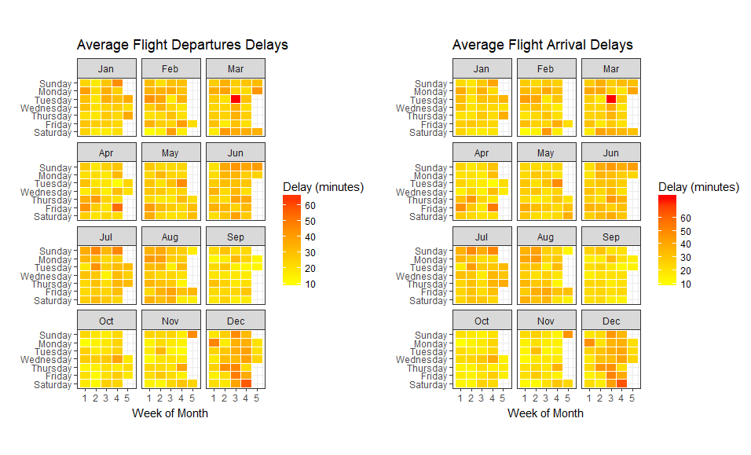
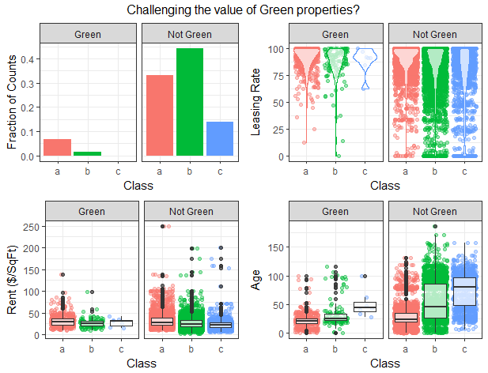
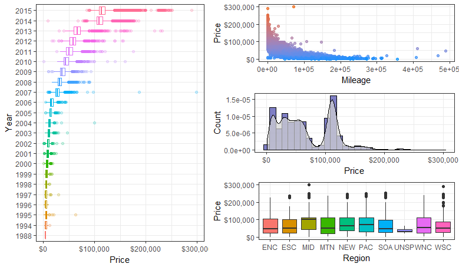

Just wanted to share some data visualizations, I’ve created.
SOFIFA League Viz (Feb 2023)


WNBA Shot-Chart viz (Jan 2023)



Reproducible Code: To be shared
Austin Airport Data (2017)
Studying delay patterns out of Austin-Bergstorm.


Properties Viz (2017)

Comparing green (eco-friendly) properties vs regular properties with respect to the different types of buildings (class). Classes are linked with the age of the property.
Cars Viz (2017)
